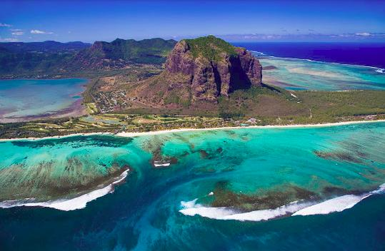

Capital of Egypt
Cairo, Egypt’s sprawling capital, is set on the Nile River. At its heart is Tahrir Square and the vast Egyptian Museum, a trove of antiquities including royal mummies and gilded King Tutankhamun artifacts. Nearby, Giza is the site of the iconic pyramids and Great Sphinx, dating to the 26th century BC. In Gezira Island’s leafy Zamalek district, 187m Cairo Tower affords panoramic city views.
Counrty in East Africa
>Mauritius, an Indian Ocean island nation, is known for its beaches, lagoons and reefs. The mountainous interior includes Black River Gorges National Park, with rainforests, waterfalls, hiking trails and wildlife like the flying fox. Capital Port Louis has sites such as the Champs de Mars horse track, Eureka plantation house and 18th-century Sir Seewoosagur Ramgoolam Botanical Gardens.
Island in Tanzania
Unguja, also known as Zanzibar Island, is the main island in the Tanzanian archipelago of Zanzibar. Stone Town, part of Zanzibar City, is an old trade center, with mosques and winding lanes. The 1883 House of Wonders is a former sultan’s palace with a clock tower. The Old Fort now houses a cultural center and a stone amphitheater. Underground aqueducts fed hot water to the late-19th-century Hamamni Persian Baths